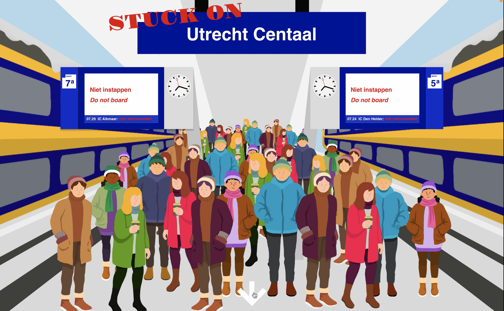

Stuck on Utrecht Centraal
Ontwerpen 2
Deze interface is geïnspireerd op het artikel "Iemand die ik niet ken: Utrecht Centraal" van De Correspondent. Op mijn interface is een plattegrond te zien van Utrecht Centraal. Hierbij wordt de mogelijkheid gegeven aan de gebruiker om te filteren op onderwerpen om te overleven op het station. De gebruiker kan kiezen tussen eten en drinken, slaapplekjes, wc's en verwarming. Vervolgens kan je als gebruiker informatie krijgen over de faciliteiten op het station en ernaar toe geleid worden.
Klik hier voor de online prototype.
